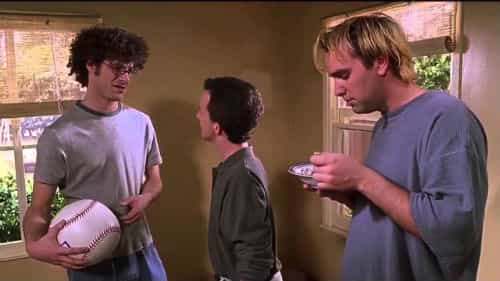

People are the most foolish when they compensate for their inferiority. Feminists fabricate a rape culture to compensate for the fact no one desires them. Fat people compensate for their low self-esteem by filling themselves up with food. And poor people compensate for their inability to be valuable to society by criticizing rich people.
Likewise, if our father was only a sperm donor, we inevitably feel a sense of inferiority that we defend against in a myriad of annoying if not destructive ways:
Reputation is a euphemism for “what everyone else thinks.” Same with legacy. The thoughts of others matter but what matters more is what we think. If we’ve failed to develop a healthy identity—because our father left and took with him the nutrition of his challenging nature—then we’ll only be able use the opinions of others as reality. The calmness of defending ourselves against reality is replaced by the frenzy of defending ourselves against opinion.
It’s good to have an attractive girlfriend because beauty nourishes our soul. But if our dad left because he didn’t think we were cool (in our minds), then we need other guys to think we’re cool. A good way to do this is to get a hot girlfriend and then parade her around like a show dog. To be even more annoying, we may ask other guys what they think of her in an anticipatory manner.
Competition is fun, but when our predilection is to view men as rivals to be bested or discredited, this says more about us than it does about them. We had no dad, after all, so there’s no model for relating to other men in a healthy way—there’s no brain state for understanding such a relationship. When we whiff precariousness in relating to men, it’s easier to fight and gossip.

This is the low-testosterone way of seeing men as competition. Instead of lashing out in inferiority, we submit to the inferiority. We never learned to stand up to a dad, so it’s going to be difficult to stand up to a co-worker or friend.
It’s no coincidence these neologisms came into being around the time fatherless guys hit the workforce. The purpose of the dad is to troll and hate so his son learns his approval doesn’t matter. Without such a test in the formative years, we grow up to see disapproval as overwhelming. The same is true for guys who rejoice in trolls and use them for motivation. Men who had dads understand criticism is a part of life and find it difficult to even consider the opinions of avatars, let alone accuse them of cruelty.
The archetypal programming in man drives us to gain status. A healthy way to do this is to figure out how to be valuable to the world. But this often takes years of trial and the sublimation of pain. Without a dad, persistence is a seen as suffocating, so we spend 300 dollars on a belt, scour the internet for shoe deals, and collect pocket squares. Treating fashion as more than a game is a pretense to having a strong sense of self.

It’s healthy to correct a girl’s behavior for the purpose of wanting the best for her, but too often correcting spills over into criticizing, which spills over into blaming. Without a dad to correct our behavior, we blame others to assuage our lack of self-mastery. Fighting culture is a clever rationalization for fighting ourselves.
The father’s love is conditional while the mother’s love is unconditional. When dad left, our mom had free reign to give us love no matter what we did, and so we think spilling paint on a canvas is praiseworthy.
Our dad may not love us, but before we confirm the false narrative of being unlovable by trying to compensate for it, let’s recognize our inferiority for what it is and manage it in a healthy way. At the very least we’ll save a lot of people from being annoyed by us.
Read More: How The Manosphere Helped Compensate for Trump’s Weaknesses